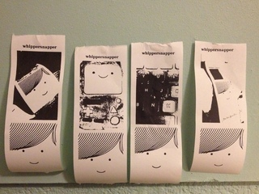
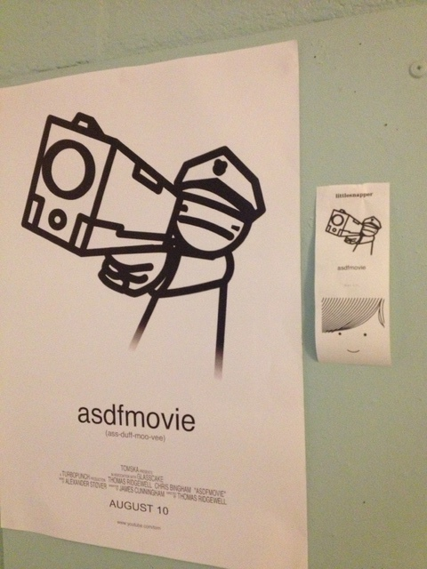

littlesnapper captures unread snapchat images, hosts the image for 45 seconds to allow the little printer to parse and print the image and then deletes it.
You would need a BERG Little Printer to use littlesnapper. It looks like this.Here are some example images which littlesnapper printed to the litteprinter.
note: all these images where printed from SNAPCHAT.


You need PHP 5.1+ installed to use littlesnapper.
after that you will need to install dependecies using the commandline for littlesnapper by using composer.
composer install
next, configure the settings in the
config.ini.php
then run this command in the commandline:
php littlesnapper
and you're done!
retrived 0 snapsto show it works. :)
nothing to print.
You can also use a cronjob to schedule littlesnapper to check for new snaps.
checking lower than a minute produces a nasty result.
Came home to see my little printer cron job disaster :S pic.twitter.com/dTzYMNWw1Q
— Wesley Hill (@hakobyte) November 11, 2013This was is a short introduction into littlesnapper, for more information visit the github page.
https://github.com/hako/littlesnapperThe MIT License (MIT)
Copyright (c) 2013 Wesley Hill
Permission is hereby granted, free of charge, to any person obtaining a copy of this software and associated documentation files (the "Software"), to deal in the Software without restriction, including without limitation the rights to use, copy, modify, merge, publish, distribute, sublicense, and/or sell copies of the Software, and to permit persons to whom the Software is furnished to do so, subject to the following conditions:
The above copyright notice and this permission notice shall be included in all copies or substantial portions of the Software.
THE SOFTWARE IS PROVIDED "AS IS", WITHOUT WARRANTY OF ANY KIND, EXPRESS OR IMPLIED, INCLUDING BUT NOT LIMITED TO THE WARRANTIES OF MERCHANTABILITY, FITNESS FOR A PARTICULAR PURPOSE AND NONINFRINGEMENT. IN NO EVENT SHALL THE AUTHORS OR COPYRIGHT HOLDERS BE LIABLE FOR ANY CLAIM, DAMAGES OR OTHER LIABILITY, WHETHER IN AN ACTION OF CONTRACT, TORT OR OTHERWISE, ARISING FROM, OUT OF OR IN CONNECTION WITH THE SOFTWARE OR THE USE OR OTHER DEALINGS IN THE SOFTWARE.